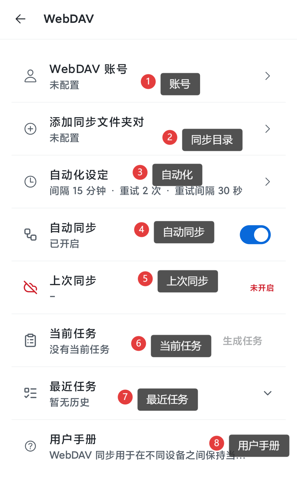
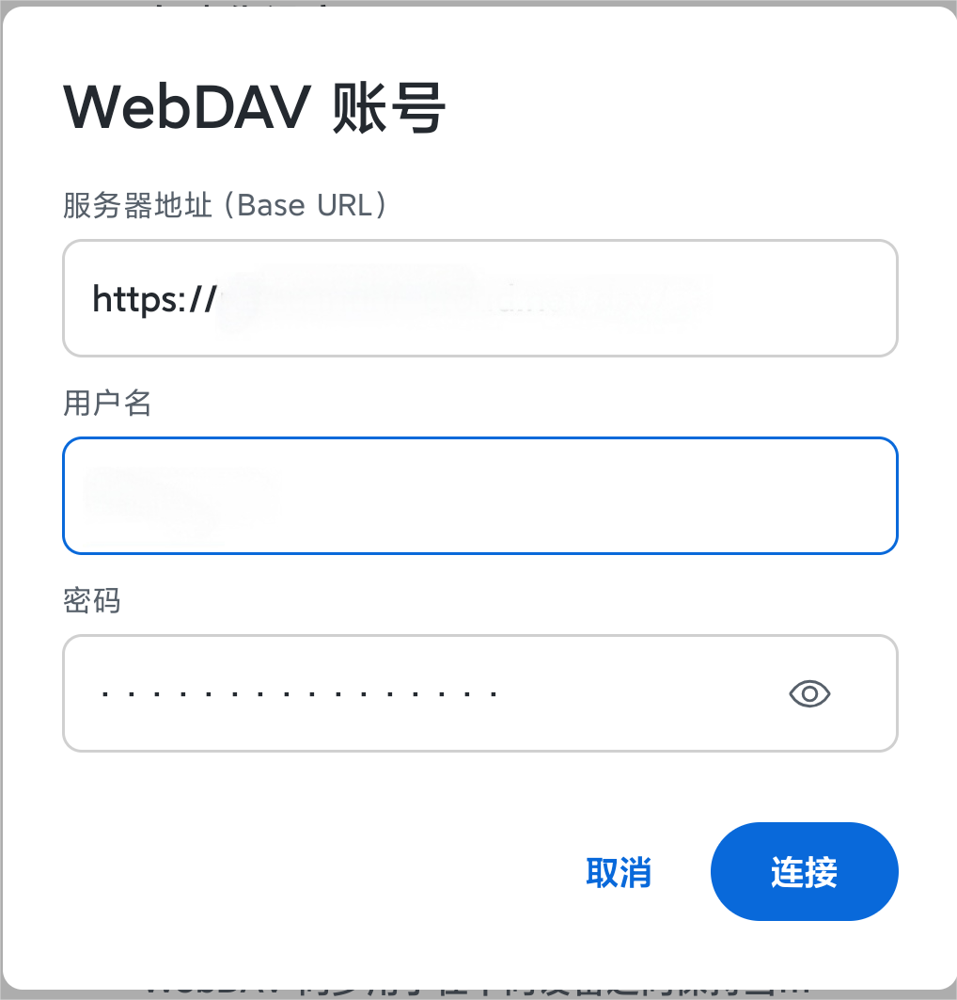
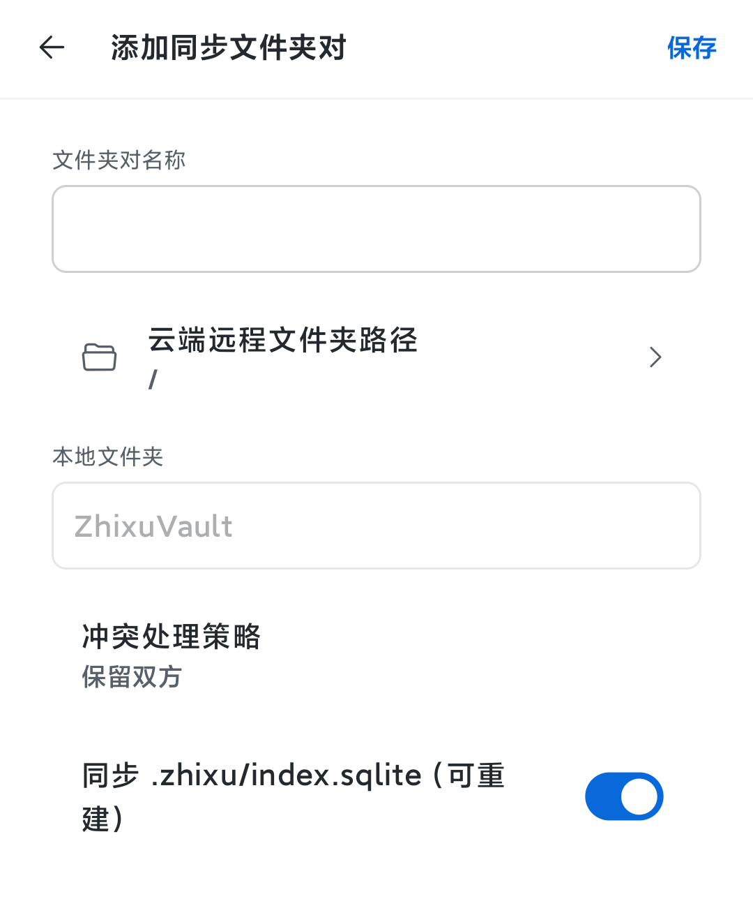
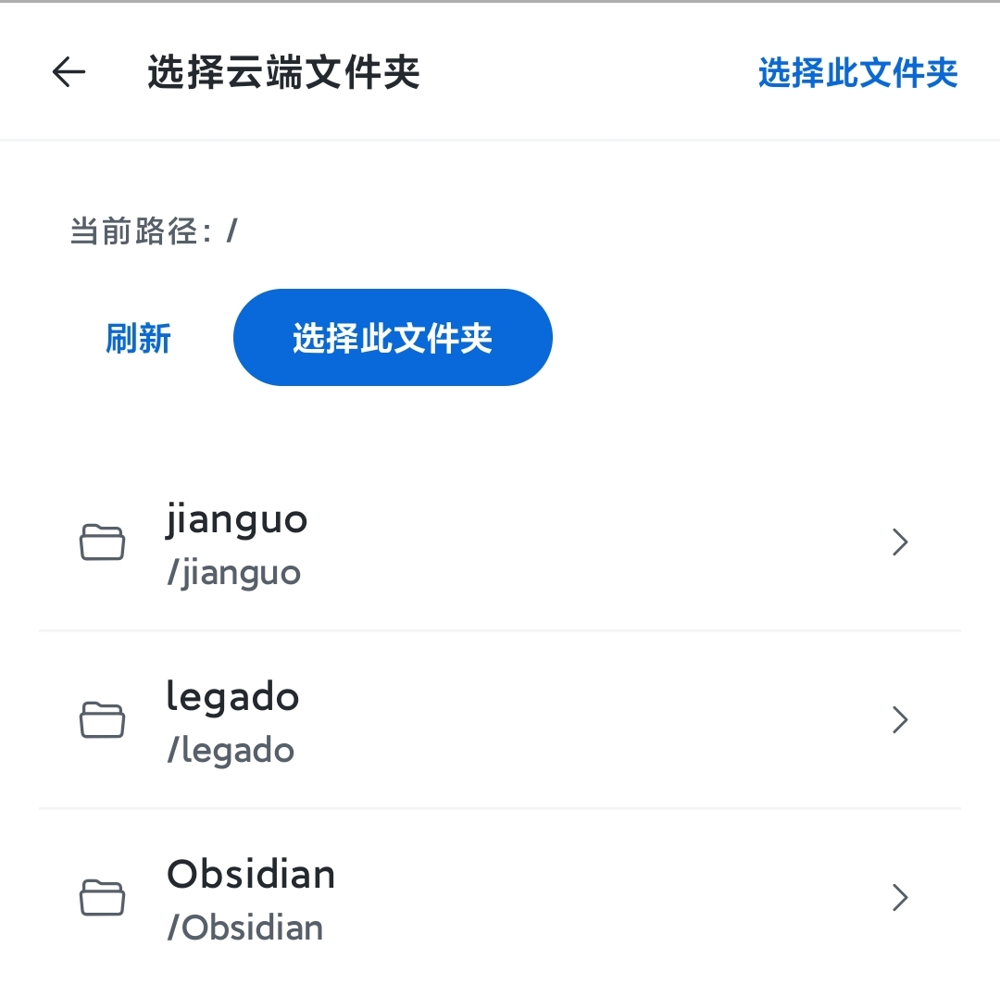
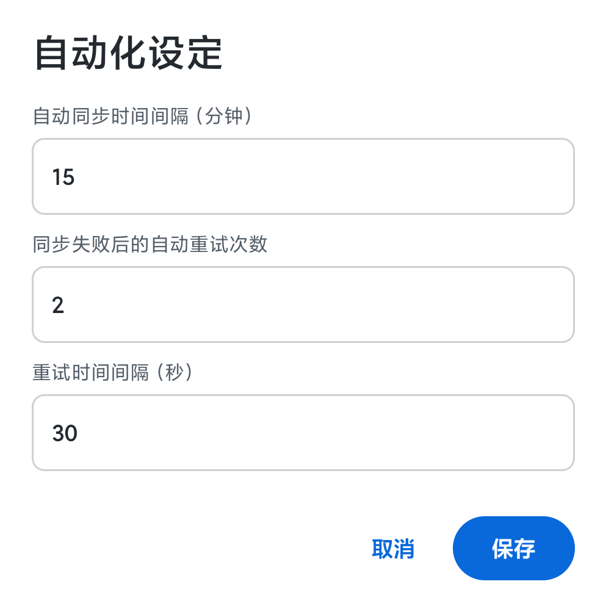
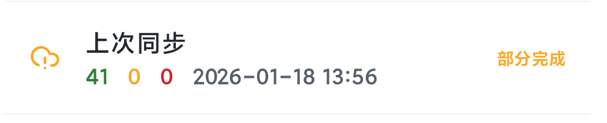
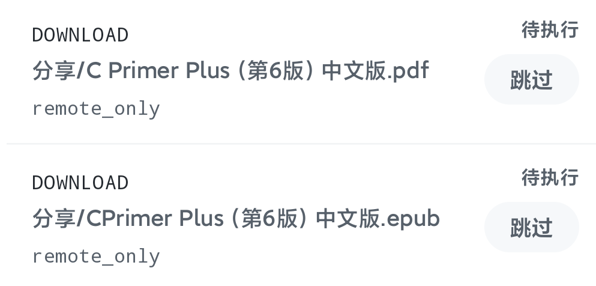
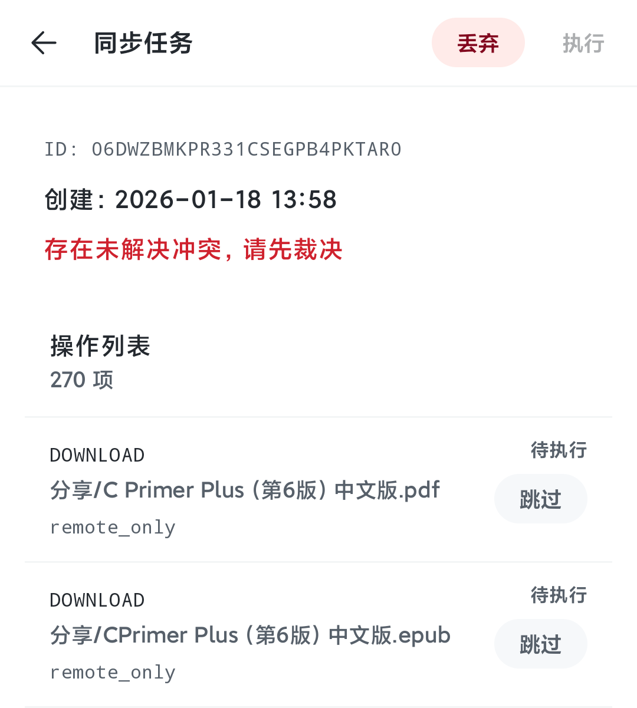
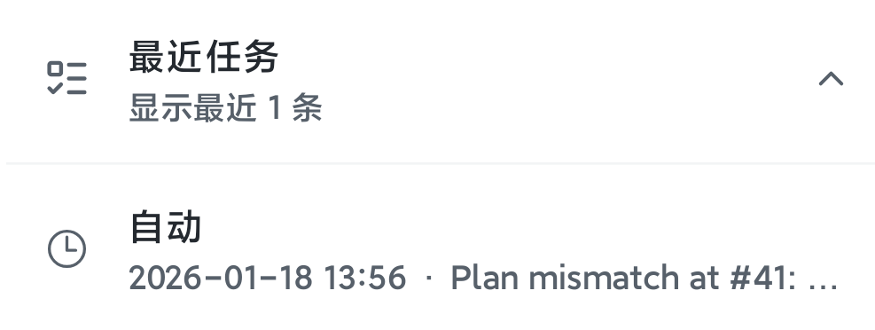

你在找“协议层说明”？
- 更偏开发/协议的内容在这里：同步协议（草案）
- 本文聚焦：如何在应用里配置、如何同步、遇到问题怎么处理。
目录
- 开始前（强烈建议先备份）
- 准备 WebDAV 信息
- 在 Zhixu 中配置 WebDAV（8 行入口）
- 第一次同步建议（两台设备怎么接入）
- 同步任务：生成 → 审阅 → 执行
- 冲突怎么处理（只在任务中裁决）
- 删除操作与“跳过”
- 自动同步（自动生成任务 + 自动执行）
- 历史任务与重试失败项
- 常见问题排查
- 安全与最佳实践
开始前（强烈建议先备份）
- WebDAV 同步的对象是整个 Vault（一个普通文件夹）。同步前建议先把 Vault 整体复制一份作为备份。
- 第一次同步通常会传输很多文件（尤其是附件），建议在稳定网络/充电环境下进行。
- 如果你不确定某个操作（尤其是删除），请先“跳过”，再确认后重试。
准备 WebDAV 信息
你需要从你的 WebDAV 服务提供方拿到以下信息：
- Base URL：WebDAV 服务地址（必须以
http://或https://开头）。 - 用户名 / 密码：用于登录 WebDAV 的凭据（如果服务支持“应用密码”，建议使用应用密码）。
- 远端文件夹路径：用于存放该 Vault 同步内容的目录（建议每个 Vault 使用独立目录）。
提示：不同服务的 WebDAV 地址格式不同。如果你不确定 Base URL 是否正确，请先在 Zhixu 里用“连接/测试”验证。
在 Zhixu 中配置 WebDAV（8 行入口）
入口路径：设置 → 同步 → WebDAV。

1）WebDAV account（账号）
- 点击
WebDAV account进入账号配置。 - 填写
Base URL、Username、Password。 - 点击
Connect：应用会测试连接，成功后保存配置。

2）Add sync folder pair（同步目录/策略）
- 点击
Add sync folder pair配置远端目录与策略。 Remote folder path：选择一个远端文件夹作为该 Vault 的同步目录。Conflict strategy：建议选择“Keep both（保留双方）”或“Ask each time（每次询问）”降低误覆盖风险。Sync .zhixu/index.sqlite：这是可重建索引库。不开启也能正常使用；新设备会重建索引（可能需要一点时间）。


3）Automation（自动化） + 4）Auto sync（自动同步）
- 在
Automation中设置：同步间隔、失败重试次数、重试间隔。 - 在
Auto sync中开启/关闭自动同步。

第一次同步建议（两台设备怎么接入）
第一次同步建议按“先上传、后下载”的顺序接入，降低冲突概率。
- 在设备 A（数据最完整的那台）配置好 WebDAV，并选择一个新的远端同步目录。
- 在设备 A 点击“生成任务”，检查操作列表是否以“上传”为主。
- 确认无误后执行任务，等待完成。
- 在设备 B 配置同一个 WebDAV 账号与同一个远端同步目录。
- 在设备 B “生成任务”，一般会以“下载”为主；执行即可把远端内容拉到本地。
同步任务：生成 → 审阅 → 执行
在 Zhixu 里，同步不是“一个按钮”，而是“一次同步任务”。它由一组明确的文件操作组成。
WebDAV 页面里的三行同步信息
- 上次同步：展示上一次同步结果的摘要（彩色数字）与时间；右侧是状态（成功/同步中/失败等）。
- 当前任务：同一时间只会有一个“当前任务”。没有任务时可以生成新任务；有任务时点击进入任务详情。
- 最近任务：可展开查看最近 N 次同步任务；可回看做了哪些操作，也可重试失败项。

任务详情页：操作列表 + 可追踪状态
打开“当前任务”或“历史任务”，你会看到该任务的操作列表。每一条操作对应一个文件，并包含：
- 文件路径（path）
- 原因（reason，用于解释为何产生该操作）
- 状态：待执行 / 跳过 / 已完成 / 失败
| 类型 | 含义 | 你需要关注什么 |
|---|---|---|
UPLOAD |
把本地文件上传到远端 | 首次同步通常上传很多；确认远端目录选对了。 |
DOWNLOAD |
把远端文件下载到本地 | 第二台设备接入时通常下载很多。 |
DELETE_LOCAL |
删除本地文件 | 高风险：建议先跳过，确认无误再执行。 |
DELETE_REMOTE |
删除远端文件 | 高风险：建议先跳过，确认无误再执行。 |
CONFLICT |
冲突（需要你裁决） | 未解决冲突会阻止执行；必须逐条选择“用本地/用远端/保留双方”。 |

冲突怎么处理（只在任务中裁决）
冲突是一条“未完成的操作”。你需要在任务列表里为每条冲突做选择，选择只会写入任务，不会立即生效。
- Use local（使用本地版本）：保留本地版本，必要时覆盖远端。
- Use remote（使用远端版本）：以远端为准，把远端覆盖到本地。
- Keep both（保留双方）：保留当前版本，并把另一侧版本保存为副本（通常写入 Vault 的
.zhixu/conflicts/目录）。
重要：未解决冲突时，任务禁止执行。解决冲突后再点击“执行”。

删除操作与“跳过”
任何删除都是高风险操作。Zhixu 会把删除作为明确的操作列出，并允许你逐条跳过。
- 如果你看到不合理的删除（例如第一次同步就出现大量删除），建议先全部跳过。
- 跳过不会丢失这条操作：你可以在任务中“取消跳过”，然后再执行。
自动同步（自动生成任务 + 自动执行）
自动同步本质上是“自动生成任务 + 自动执行”，并遵守以下规则：
- 不覆盖当前任务：如果你手动生成了任务（或自动生成的任务还没处理），自动同步不会在后台重新生成并覆盖它。
- 遇到冲突会停下：一旦检测到冲突，自动同步会留下一个“当前任务”给你处理（需要你裁决后才能执行）。
- 失败会按重试策略尝试：重试次数与间隔由 Automation 设置控制。
历史任务与重试失败项
- 在“最近任务”中展开列表，点击某一条任务可查看详情。
- 如果某次任务有失败项，你可以在任务详情页选择“重试失败项”（只针对失败文件生成新任务）。

常见问题排查
1）Connect 失败 / HTTP 报错
- 确认
Base URL是否是 WebDAV 地址（不是网页首页地址）。 - 确认必须以
http://或https://开头。 - 如果是 401/403：通常是用户名/密码不正确，或需要应用密码。
- 如果是 404：通常是路径不对（WebDAV 端点不同），请回到服务提供方文档确认。
2）生成任务按钮不可用
- 请先选择 Vault（未选择 Vault 时无法同步）。
- 确认已启用 WebDAV，并且 Base URL 合法。
- 如果正在加载/有错误提示，先等待加载完成或修复错误。
3）提示 “WebDAV config changed; regenerate task”
- 你在生成任务后修改了账号/远端目录/是否同步 index.sqlite。
- 解决方式：丢弃当前任务，然后重新生成任务。
4）自动同步没有动静
- 确认
Auto sync已开启，并且Automation的间隔不是太长。 - 如果当前存在“当前任务”（尤其是冲突未处理），自动同步会停止，直到你处理该任务。
- Android 可能限制后台任务：可尝试为 Zhixu 关闭电池优化/允许后台运行。
5）同步很慢 / 首次同步耗时很长
- 首次同步需要扫描与传输大量文件；建议 Wi‑Fi + 充电。
- 附件较多时会明显变慢，属于正常现象。
安全与最佳实践
- 建议使用 HTTPS；避免把 WebDAV 凭据暴露在不安全网络中。
- 建议每个 Vault 使用独立远端目录，避免多个 Vault 混用同一目录。
- 跨设备频繁编辑同一文件时，更容易产生冲突：尽量缩短离线编辑时间，或选择“保留双方”。
- 不要手动修改
.zhixu/下的同步元数据文件（除非你知道自己在做什么）。